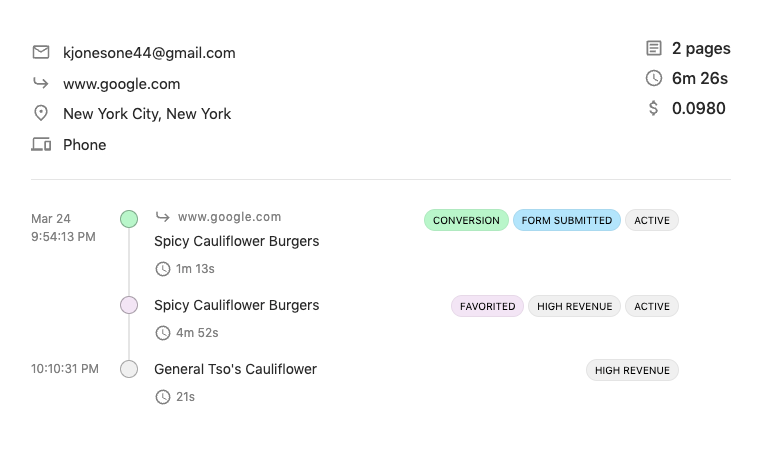

Understand customer journeys
Guide them to conversion

Journeys help you to study the effectiveness of your advertising and marketing campaigns by seeing
how individuals behave on your website after arriving via one of your campaigns.
Acquisition
The beginning of the journey. See how your visitors found you, what landing page they came
through, and what they did before moving on.
Engagement
The crucial pages that make or break the journey. Discover the granular details about their decision
process, from search queries to active time spent reading and more.
Conversion
What it’s all about. The journey has resulted in a qualified lead, and we show you everything you need
to
know to start closing!
This is wonderful! Marketers love to talk about the customer journey and mapping content. Slickstream actually lets me see the experience at the appropriate level so I can better understand how visitors are moving from page to page…
The big benefit is that I don't need to have a Ph.D. in analytics to set this up. It's all done for me.
MarketMuse
How does it work?
Using the journey explorer is as easy as 1-2-3,
and takes just seconds to get set up!
Sign in and connect your Google Analytics.
Immediately start exploring your data, and add our ultralight plugin to access even more insights.
Let us help guide your visitors to conversion with world-class site navigation tools.
Understand Your Journeys
Use the Journey Explorer to easily uncover hidden insights about how your visitors are engaging with your site.
Select individual journeys and follow them from acquisition through conversion.
Dive deeper with advanced filtering options, including campaigns, activity level and more.
Search individual pages to see how they’re performing, and where visitors are going next.
Integrate your Google Analytics for immediate access, or add our plugin for even richer data.
Increase Conversions
Add the simple and lightweight Navu Bar to your site to keep your visitors moving in the right direction.
✨ Add the simple and lightweight Navu Bar to your site to keep your visitors moving in the right direction.
✨ Completely customizable CTAs, or choose from our built-in templates.
✨ Choose who sees it based on acquisition source, subdomain, or any number of other options.
✨ Personalize the look and feel to perfectly fit your site.
Pricing